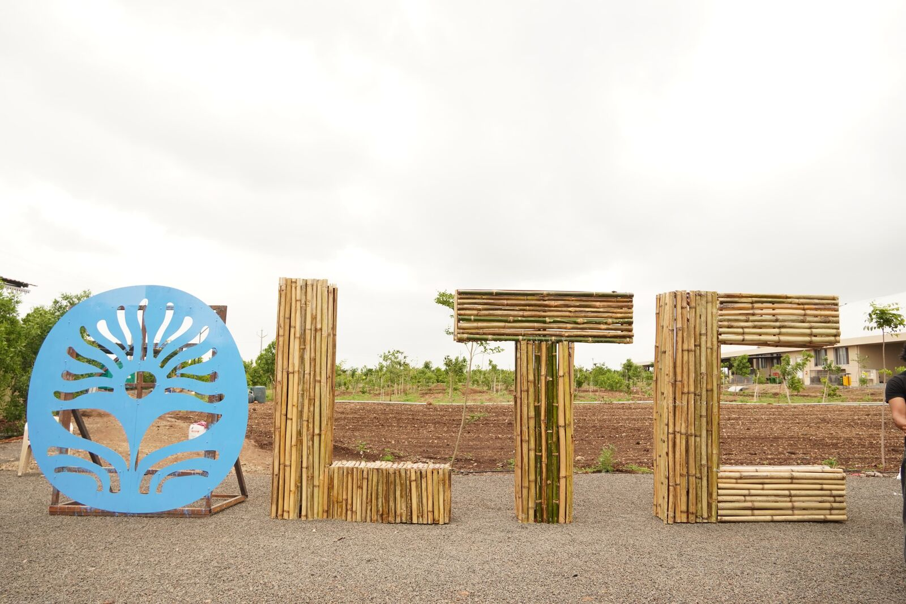
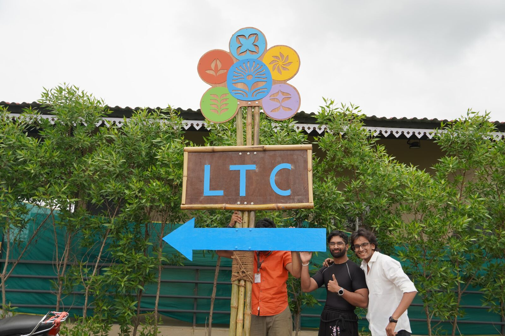
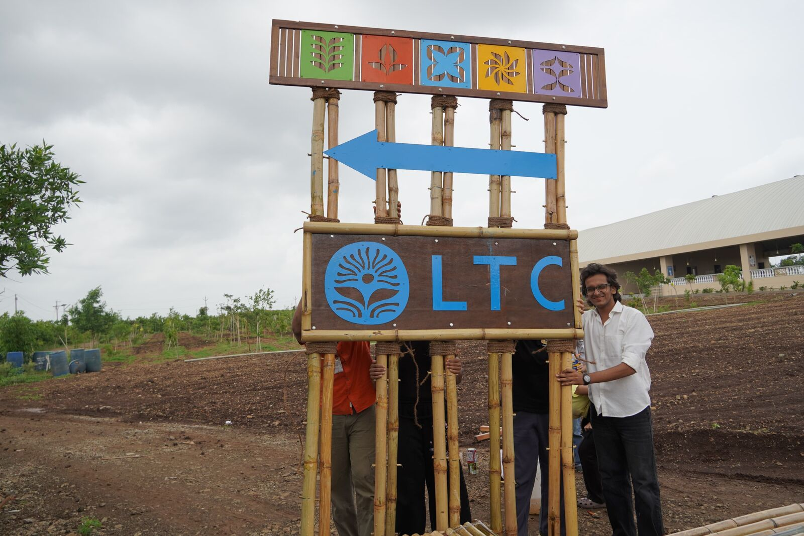
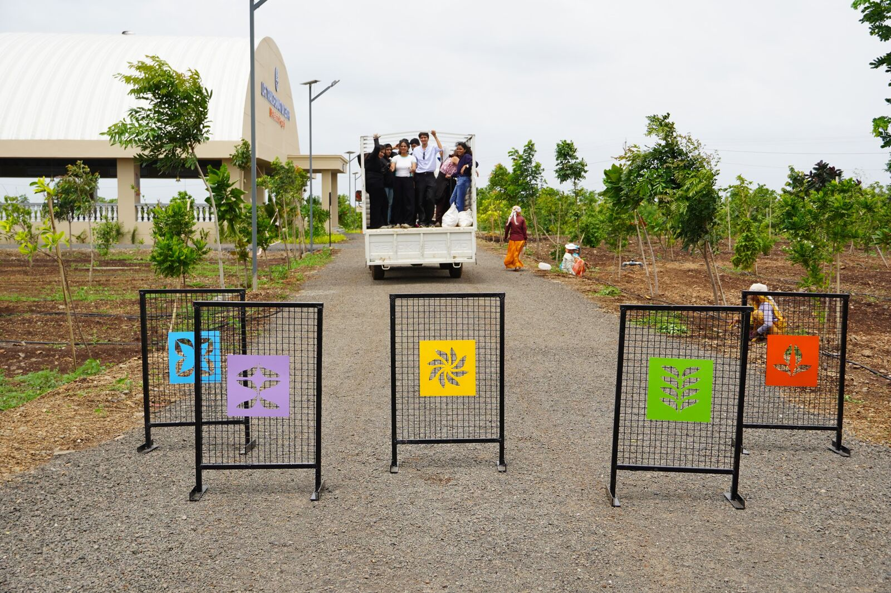
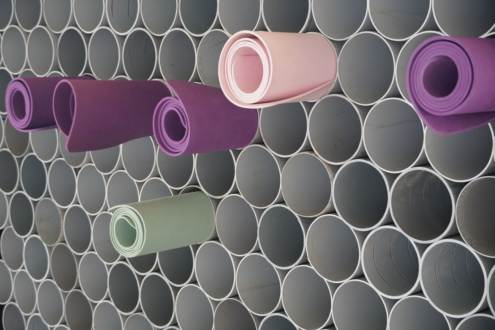
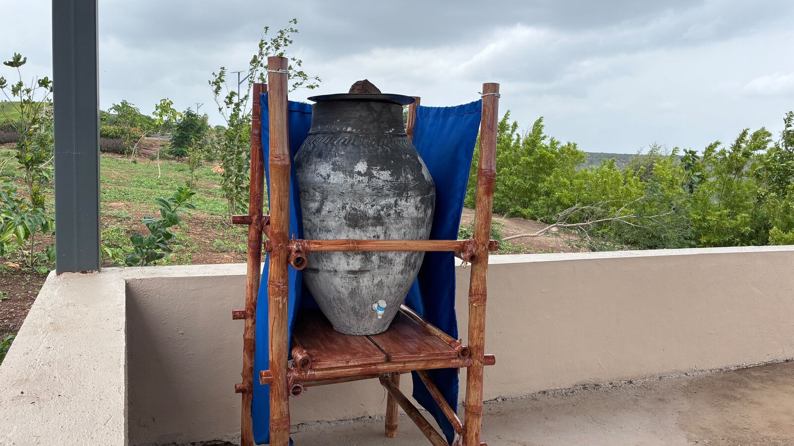
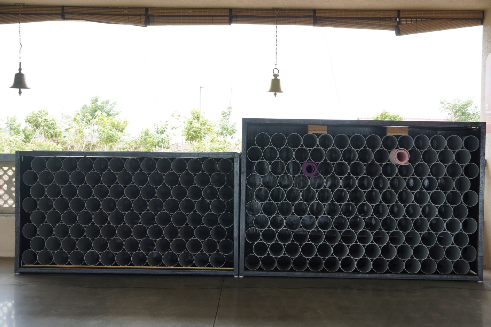
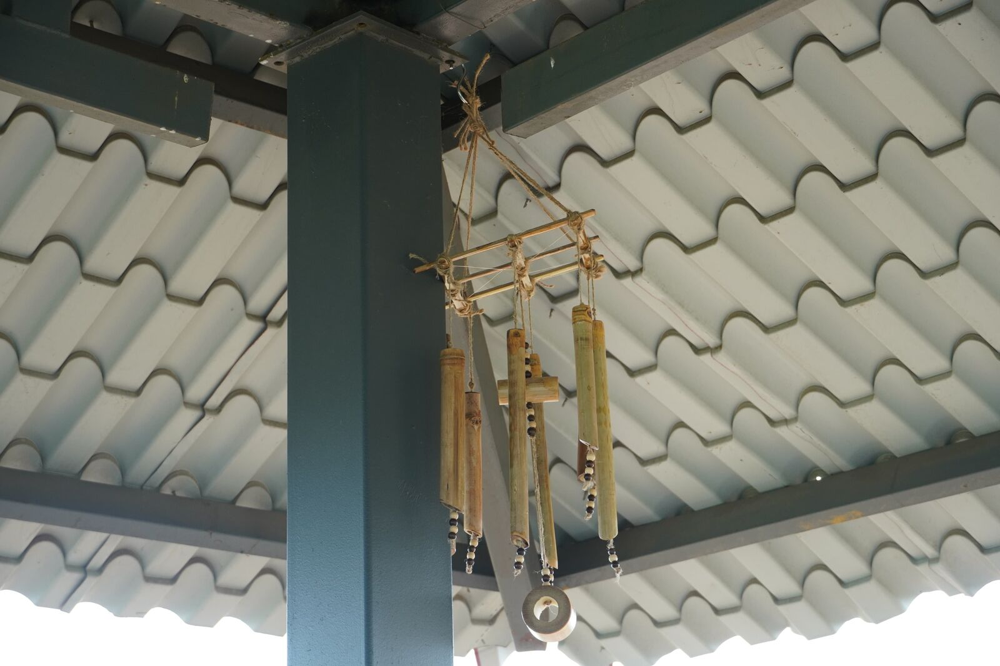
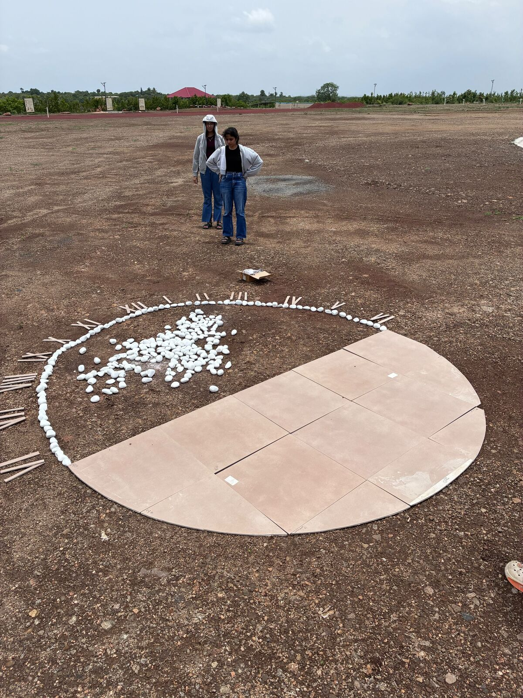
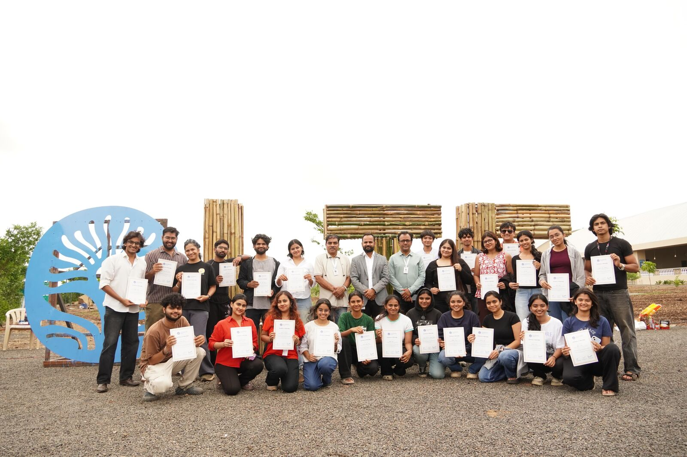

The campus
The Life Transformation Centre spans 170 acres of forest, farmland and learning pavilions. Its mission, "Connecting the Soul to the Soil", is to ease digital exhaustion through experiential learning. Our job was to give that idea a physical presence across the campus.

From expo to site
The internship began at the MIT-WPU School of Design Expo, where our concepts won the mandate. We then ideated and prototyped in the workshop with CAD and full-scale mock-ups, disassembled everything, moved it down the highway and installed it on site.


Nature meets industry
Every piece pairs organic materials such as bamboo, terracotta and mud with steel structures that can survive the weather. A 35-foot landmark pylon and 8-foot wayfinding gateways guide visitors; floral road barricades manage campus traffic; a yoga-mat grid stores mats in the Sanskruti Hall; and a mud-pot scaffold with Japanese-style joinery cools a corner by evaporation.






My part
I was the bridge between our 25-person team and the client, coordinating with the LTC coordinators and faculty. In the workshop I arc-welded and assembled the custom road barricades. On site I supervised ground anchoring and levelling so each installation sat true and stable. The internship closed with client sign-off and certificates presented on campus.
